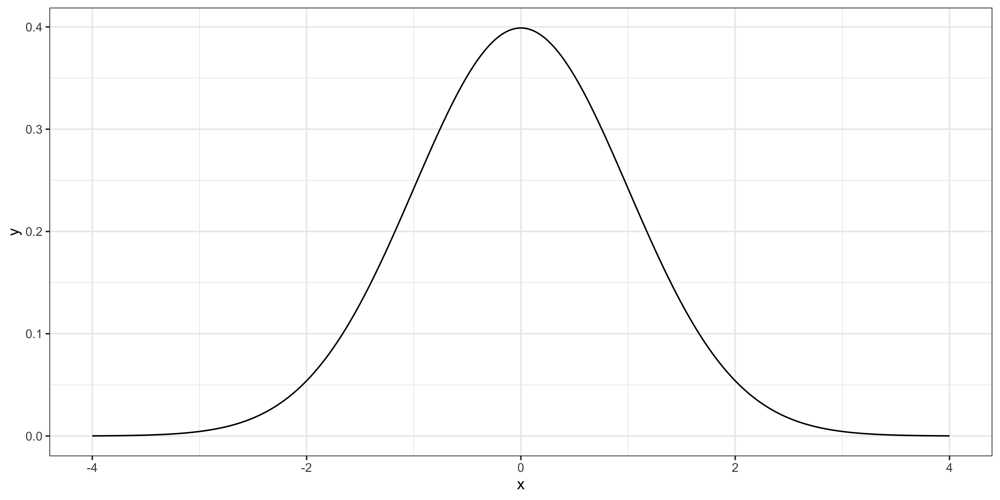
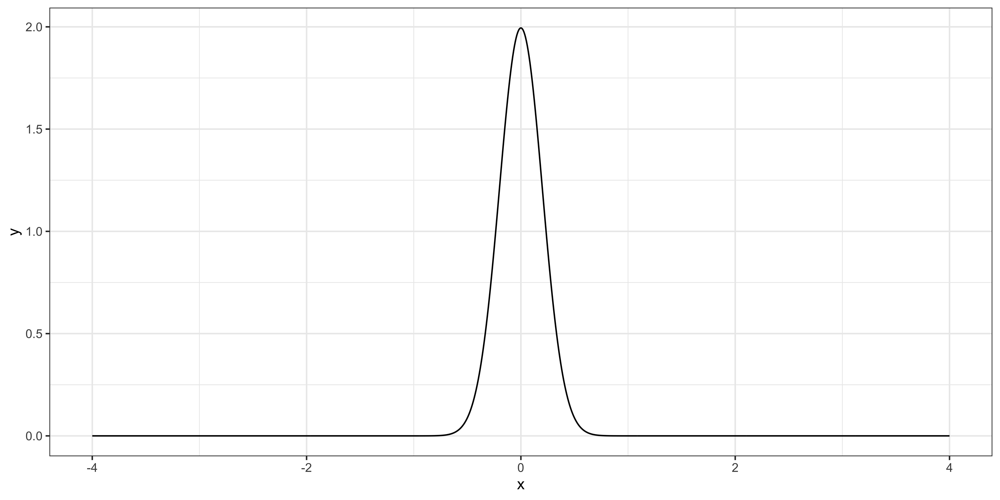

05: Hypothesis Testing
Hypothesis Testing
Here is the general step of any hypothesis testing:
Step 1: specify the null \((H_0)\) and alternative \((H_1)\) hypotheses
Step 2: find the distribution of the test statistic if the null hypothesis is true
Step 3: calculate the test statistic based on the data and regression results
Step 4: define the significance level
Step 5: check how unlikely that you get the actual test statistic (found at Step 3) if indeed the null hypothesis is true
Goal
Suppose you want to test if the expected value of a normally distributed random variable \((x)\) is 1 or not.
State of Knowledge
We do know \(x\) follows a normal distribution and its variance is 4 for some reason.
Your Estimator
Your estimator is the sample mean: \(\theta = \sum_{i=1}^J x_i/J\)
So, we know that \(\theta \sim N(\alpha, 4/J)\) (of course \(\alpha\) is not known).
So, \(\frac{x-a}{\sqrt{b}} \sim N(0, 1)\) (combined with Math Aside 1)
This means,
Since \(\theta = \sum_{i=1}^J x_i/J\) and \(x_i \sim N(\alpha, 4)\),
- \(Var(\theta) = J \times \frac{1}{J^2}Var(x) = 4/J\)
- \(\frac{\sqrt{J}}{2} \cdot (\theta - \alpha)\sim N(0, 1)\).
We established that \(\frac{\sqrt{J}}{2} \cdot (\theta - \alpha)\sim N(0, 1)\).
The null hypothesis is \(\alpha = 1\).
If \(\alpha = 1\) is indeed true, then \(\sqrt{J} \times (\theta - 1)/2 \sim N(0, 1)\).
In other words, if you multiply the sample mean by the square root of the number of observations and divide it by 2, then it follows the standard normal distribution like below.
Suppose you have obtained 100 samples \((J = 100)\) and calculated \(\theta\) (sample mean), which turned out to be 2.
Then, your test statistic is \(\sqrt{100} \times (2-1)/2 = 5\).
How unlikely is it to get the number you got (5) if the null hypothesis is indeed true?
Suppose you have obtained 400 samples \((J = 400)\) and calculated \(\theta\) (sample mean), which turned out to be 1.02.
Then, your test statistic is \(\sqrt{400} \times (1.02-1)/2 = 0.2\).
How unlikely is it to get the number you got (0.2) if the null hypothesis is indeed true?

Note that you do not really need to use \(\sqrt{J} \times (\theta - \alpha)/2\) as your test statistic.
You could alternatively use \(\theta - \alpha\). But, in that case, you need to be looking at \(N(0, 4/J)\) instead of \(N(0, 1)\) to see how unlikely you get the number you got.
For example, when the number of observations is 100 \((J = 100)\), the distribution of \(\theta-\alpha\) looks like the figure on the right.

Reconsider the case 1
Suppose you have obtained 100 samples \((J = 100)\) and calculated \(\theta\) (sample mean), which turned out to be 2.
Then, your test statistic is \(2-1 = 1\).
Is it unlikely for you to get 1 if the null hypothesis is true?
The conclusion would be exactly the same as using \(\sqrt{J} \times (\theta - \alpha)/2\) because the distribution under the null is adjusted according to the test statistic you use.
What do we need?
- test-statistic of which we know the distribution (e.g., t-distribution, Normal distribution) assuming the null hypothesis
What do we (often) do?
- transform (most of the time) a raw random variable (e.g., sample mean in the example above) into a test statistic of which we know the distribution assuming that the null hypothesis is true
- e.g., we transformed the sample mean so that it follows the standard Normal distribution.
- check if the actual number you got from the test statistic is likely to happen or not (formal criteria has not been discussed yet)
You have collected data on annual salary for those who graduated from University A and B. You are interested in testing whether the difference in annual salary between the universities (call it \(x\)) is 10 on average. You know (for unknown reasons) know that the difference is distributed as \(N(\alpha, 16)\).
- What is the null hypothesis?
- Under the null hypothesis, what is the distribution of the sample mean when the number of observation is 400?
- Normalize the test statistic so that the transformed version follows \(N(0, 1)\).
- The actual difference you observed is 10.2. What is the probability that you observe a number greater than 10.2 if the null hypothesis is true? Use
prnom().
- \(\alpha = 10\)
- \(\theta \sim N(\alpha, 16/400)\)
- \(\sqrt{\frac{400}{16}}\cdot (\theta - \alpha)\)
- The test statistic is \(5 \times (10.2 - 10) = 1\)